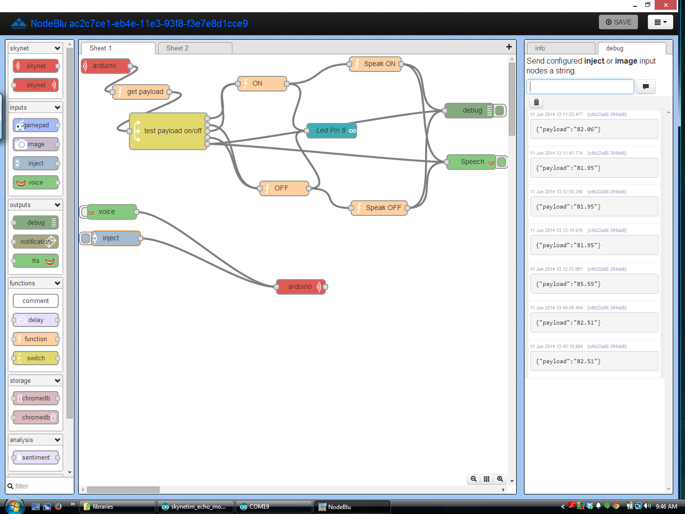

20140611 SKYNET.IM
Yup, the terminators are coming, Chris Matthieu along with a few others have been working on machine to machine messaging. I’ve been giving Chris a hard time about the robots coming back, he is making it happen!!! Seriously thou, Skynet is a fairly easy to use set of protocols for talking to any machine. Chris has (and I think mistakenly) said you don’t need a CPU - What I think he means is you don’t need a desktop/laptop full sized computer (or for that matter a rPI, BeagleBone, or small computer) You do need a processor of some type - A microcontroller works well.
So what is Skynet? In a nutshell it’s a simple way for machines to talk to each other.
It takes the Firmata protocols and builds on them to be used over wireless or ethernet.
SO what is Firmata? It’s a generic protocol for communicating with microcontrollers from software on a host computer. http://firmata.org
I haven’t gotten into the firmata implitations of skynet yet, and that maybe something for a later meeting.
With Skynet, every machine generates it’s own UUID and API codes, they can be overwritten if you need to. The programs/api use these UUID and codes to talk to each other. You can name them, but the machines will still use the UUID.
Going to verify this at the library, but it seems once connected, the machines UUID stay with them, making it easy on us humans, and at least easy enough that we don’t have to change our code everytime we plug in the device.
There is a web impliation of skynet using google chrome and something called NodeBlu which is based from something called NodeRed.
NodeBlu, is a connector, it really is easy to pull blocks down and connect them to other blocks to have a remote device do something.
But the real power of skynet comes from the API, using simple restFUL commands, someone can control the remote device from the command line. OR Two skynet connected devices can connect to each other and decide what to do.
Chris has a number of videos on Skynet, https://www.youtube.com/channel/UCBMdqdAbjJjE9LvMjVpiwUw
I was watching a few of his videos to get ideas on what to demo, and came across one where he could call (on his phone) his connected devices - this is very cool when it comes to automation. Think about it, if I could call Skynet, say “I’ll be home in 10 minutes unlock the door” and I had a door that could be remotely unlocked, in 10 minutes the door would open. Using that same idea you could text your home and ask for a status update. All very easy to do.
So My demo is going to be on the “Echo” sketch that is included with the Skynet-Arduino-Firmware Library Created by Jacob Rosenthal https://github.com/skynetim/skynet_firmware_arduino
Jacob also has several other skynet librarys in his “skynet” github https://github.com/skynetim
Another developer/contributor to Skynet is Luis Montes (monteslu)- He has worked on the Skynet Firmata and he has some librarys on github as well. https://github.com/monteslu
I can tell you that I’ve “spoke” well chatted with all three of these people over the past couple of weeks and all are very knowledgable and helpful on skynet and how it works.
In fact a few of the issues I had at first with NodeBlu Luis said he could fix or try to fix so it was a little more clear as to what is needed.
But wait I was talking about my demo - It’s the “Echo” sketch, and at first it wasn’t clear to me what this sketch did. BUT Simply if you send a message to it, it will “Echo” that message back to you.
Using NodeBlu, I was able to setup something that I could either speak to it, google would use it’s speech to text engine and send the message on to the machine (arduino), a couple of seconds later the arduino would send back the text and google would use the text to speech engine and speak what I said. Yes, I know, all of that could have been done quickly and easier with sending the text to the machine, but it’s a demo of what can be done. This is using the stock “Echo” sketch and a NodeBlu program that I built.
I can also just type a message into the NodeBlu program and that will get sent to the arduino, and come back and speak.
{width="6.5in" height="4.875in"}
My 2nd demo of Skynet, I have hooked up a DS1620 temperature sensor (Which seems off to me today it’s saying it’s 82 degrees in here, seems high, maybe because the library was written for a UNO and I’m using it on a mega) doesn’t matter, it’s a concept. I’m using the same NodeBlu program, but this time, anything I say, or ask for it will speak the temperature to me.
So you might be looking at the NodeBlu program above and wondering what is going on?
There are two parts to this, (maybe three), the first step is to setup your remote devices, Called NODES - You can name these devices anything you want, the name isn’t important as it’s for us humans anyways. But you will need the device UUID and the Token (on the Arduino you can get both these from the serial monitor)
Next you drag some blocks over to the workspace - most of the blocks are self explanatory as to what they do, some are inputs and some are outputs, and some are both. (So if the connector is on the right side it’s an input, if it’s on the left side it’s an output, and on both sides well it’s both) There are two blocks that aren’t so self explanatory, they are the Function block, and the switch block. So the function block will allow you to write some Java script functions that can change the course of the program on the NodeBlu side of things.
Remember it’s looking for JAVA - which is a little different, and threw me for a bit as too way things weren’t working. Right now there is nothing that tells you there is an error, and this one of the things that Luis thought he could fix. The switch block is an kind of like a IF statement block, you can add multiply paths for the output to go to. In my example you can see 5 different directions the output can go.
So that is just briefly what Skynet is, and what it can do, The unfortunate part is the guys that created this are programmers by profession, and they didn’t do such a good job in my opinion documenting things, And for someone who is just starting programming, or someone who has never used a API this might be a real struggle. I have used APIs and been programming for a while now and I found at least parts of it to be confusing, I’d consider myself to be an intermediate level programmer, nothing these guys can do. It’s an old problem with us programer types - we understand and know how it works, and don’t think about what the end user knows or the skill level they might be at. Happens all the time. The best thing I can say is the guys on Chris’s team are very knowledgable, and do understand what is going on, and are very helpful. (Twitter is probably the best way to get them, I know that Chris watches both Twitter and G+ most of the day)
Release the Robots!
Modified Skynet.im Echo sketch to include DS1620 Temp Sensor:
*
* SSSSS kk tt
* SS kk kk yy yy nn nnn eee tt
* SSSSS kkkkk yy yy nnn nn ee e tttt
* SS kk kk yyyyyy nn nn eeeee tt
* SSSSS kk kk yy nn nn eeeee tttt
* yyyyy
*
* SkynetClient for http://skynet.im, OPEN COMMUNICATIONS NETWORK & API FOR
* THE INTERNET OF THINGS.
*
* This sketch parses any messages it receives and echos them back to the
* sender.
*
* Works with ethernet shields compatible with EthernetClient library from
* Arduino. If you don't know, grab the original
* http://arduino.cc/en/Main/ArduinoEthernetShield
*
* Also requires the ArduinoJsonParser
* https://github.com/bblanchon/ArduinoJsonParser
*
* You will notice we're using F() in Serial.print which might be new to you
* Its covered briefly on the arduino print page but it means we can store
* our strings in flash, instead of in ram.
*
* You can turn on debugging within SkynetClient.h by uncommenting
* #define SKYNETCLIENT_DEBUG
*/
#include <EEPROM.h>
#include "Ethernet.h"
#include "SPI.h"
#include "SkynetClient.h"
#include <JsonParser.h>
#include <DS1620.h>
#include <stdlib.h>
EthernetClient client;
SkynetClient skynetclient(client);
//you can't have 2 of the same mac on your network!
byte mac[] = { 0xDE, 0xAD, 0xBE, 0xEF, 0xFE, 0xED };
char hostname[] = "skynet.im";
int port = 80;
static const uint8_t RST_PIN = 7;
static const uint8_t CLK_PIN = 8;
static const uint8_t DQ_PIN = 9;
DS1620 ds1620(RST_PIN, CLK_PIN, DQ_PIN);
void setup()
{
pinMode(8, OUTPUT);
Serial.begin(9600);
delay(100);
ds1620.config();
// start the Ethernet connection:
if (Ethernet.begin(mac) == 0) {
Serial.println(F("Failed to configure Ethernet using DHCP"));
// no point in carrying on, so do nothing forevermore:
for(;;)
;
}
skynetclient.setMessageDelegate(onMessage);
}
void onMessage(const char * const data) {
JsonParser<16> parser;
//Serial.print("Parse ");
//Serial.println(data);
JsonHashTable hashTable = parser.parseHashTable((char*)data);
if (!hashTable.success())
{
Serial.println("JsonParser.parseHashTable() failed");
return;
}
char* payload = hashTable.getString("payload");
//Serial.print("payload=");
Serial.println(payload);
char* fromUuid = hashTable.getString("fromUuid");
//Serial.print("fromUuid=");
//Serial.println(fromUuid);
const float temp_c = ds1620.temp_c();
const float temp_f = temp_c * 9/5.0 + 32;
Serial.print(temp_f, 1); // 1 decimal place
Serial.print("F ");
Serial.print(temp_c, 1);
Serial.println("C");
String s = dtostrf(temp_f, 1, 2, payload);
skynetclient.sendMessage(fromUuid, payload);
}
void loop() {
while(!skynetclient.monitor()){
bool skynetStatus = false;
do {
skynetStatus = skynetclient.connect(hostname, port);
} while (!skynetStatus);
Serial.println(F("Connected!"));
char uuid[UUIDSIZE];
skynetclient.getUuid(uuid);
Serial.print(F("uuid: "));
Serial.println(uuid);
skynetclient.getToken(uuid);
Serial.print(F("token: "));
Serial.println(uuid);
}
}
So you’ll see it doesn’t matter what you send to it, it will send the temperature back everytime - you can be really impressive thou and say “What is the Temerature” to fool people.
Simple prove of concept sketch, and a good demo